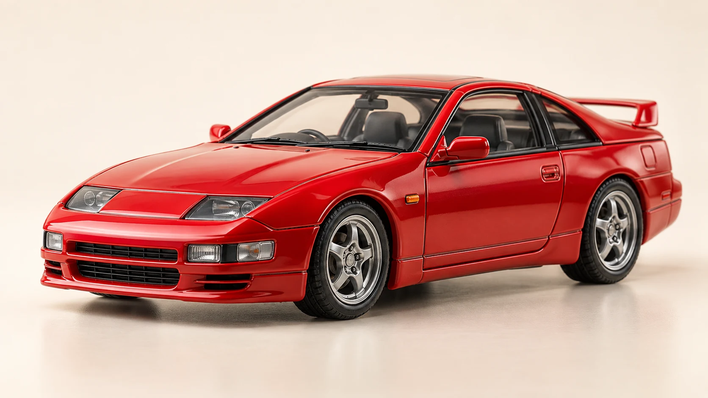

Every model. Every little detail.
Brand, scale, series, color, condition, quantity and your own photos. Give each piece the record it deserves.
 TomiTrackBY TOMIKINGOpen your garage ↗
TomiTrackBY TOMIKINGOpen your garage ↗BUILT FOR THE DETAIL OBSESSED
Every casting. Every color. Every good find.
Give your diecast collection a place to call home.

A LITTLE ORDER FOR YOUR OBSESSION
A clean portfolio, a proper catalog of your own models, and a wishlist for the ones that got away.
YOUR PERSONAL DIECAST GARAGE
＋ $30.00 vs. purchase cost
ILLUSTRATIVE PREVIEW · MANUAL ESTIMATES
Brand, scale, series, color, condition, quantity and your own photos. Give each piece the record it deserves.
Track what you paid and your own value estimates. Search your shelves before you accidentally buy that casting twice.
Save the pieces you are looking for. When one finally arrives, move it into your collection and fill in the details.
ON YOUR DESK. IN YOUR POCKET.
Start in your browser, or download TomiTrack for Android and Windows. Transfer your collection with a backup file.
v0.4.23 · Early access · Local storage · USD estimatesAndroid updates from 0.2.1 install in place with your approval. Moving from 0.1.0 or 0.2.0 requires a one-time JSON backup, reinstall and restore. Windows may show SmartScreen. Keep regular backups.
THE FIRST CASTING IS JUST THE START
The foundation is here. This is where we want to take it next.
Collection records, photos, wishlist, estimates and portable backups.
A growing release archive, with more variants, casting links and barcode evidence.
Optional cloud sync, sourced price data and collector showcases.
FROM YOUR FIRST MODEL TO YOUR NEXT GRAIL